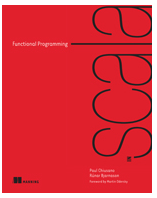

FP
with Java 8 (Part 2)
Mateusz Szczap
Email: mszczap@ebay.com
Twitter: @matiwinnetou
mobile.de - eBay Inc. subsidiary
Recap
- Definitions
- Basic properties of FP, e.g. Immutability, Side-Effect Free
- Pragmatics and Academics followers of FP (strict or pragmatic FP)
- Function as values, e.g. Function<Integer,Integer> inc = i -> i + 1
- We covered typical function operators, map, flatMap, zip, concat, reduce, etc
Recap
- Higher Order Function, passing and returning them to/from methods
- Function Application, e.g. square.apply(2) equals 4
- Function Composition (compose and andThen), e.g. f(g(x))
- Reductions, a list of values reducing to one value, e.g. int stream's minumium
FP is Jargon's *Galore
Esoteric nature of FP lies in cryptic language and jargon. Let's demystify some terms.

*galore - (EN -> DE) - in Hülle und Fülle
Monoid
"A monoid is an algebraic structure with a single associative binary operation and an identity element."
Monoid Example - Part 1
public interface Monoid<T> {
T zero(); //identity element
BinaryOperator<T> operation(); //associative binary operation
}
public class StringMonoid implements Monoid<String> {
public static final StringMonoid INSTANCE = new StringMonoid();
public String zero() {
return "";
}
public BinaryOperator<String> operation() {
return (prev, next) -> prev + next;
}
}
Monoid Example - Part 2
private static ImmutableList<Person> people() {
Person p1 = new Person("Jan", Person.Gender.MALE, 172, 80, Optional.of(new Person.Address("Albert-Einstein", 1, 14345)));
Person p2 = new Person("Kathy", Person.Gender.FEMALE, 160, 16);
return ImmutableList.of(p1, p2);
}
@Test
public void testStringMonoid() {
String reduced = people().stream()
.map(p -> p.getName())
.reduce(StringMonoid.INSTANCE.zero(), StringMonoid.INSTANCE.operation());
assertEquals("JanKathy", reduced);
}
Monomorphic Function and Polymorphic Function
"Monomorphic functions are functions that operate on one type of data only."
"Polymorphic functions are functions that work on any data type."
Monomorphic functions
private static ImmutableList<Person> people() {
Person p1 = new Person("Jan", Person.Gender.MALE, 172, 80, Optional.of(new Person.Address("Albert-Einstein", 1, 14345)));
Person p2 = new Person("Kathy", Person.Gender.FEMALE, 160, 16);
return ImmutableList.of(p1, p2);
}
public Optional<Person> findAdult() {
people().stream()
.filter(p -> p.getAge() >= 18)
.findFirst()
}
Polymorphic functions
private static ImmutableList<Person> people() {
Person p1 = new Person("Jan", Person.Gender.MALE, 172, 80, Optional.of(new Person.Address("Albert-Einstein", 1, 14345)));
Person p2 = new Person("Kathy", Person.Gender.FEMALE, 160, 16);
return ImmutableList.of(p1, p2);
}
private <T> T reduce(Function<Person, T> mapping, Monoid<T> monoid) {
return people().stream()
.map(mapping)
.reduce(monoid.zero(), monoid.operation());
}
Loan Pattern - 1
public class Resource {
public Resource() {
System.out.println("Opening resource");
}
public void operate() {
System.out.println("Operating on resource");
}
public void dispose() {
System.out.println("Disposing resource");
}
}
Loan Pattern - 2
Resource resource = new Resource();
try {
resource.operate();
} finally {
resource.dispose();
}
Loan Pattern - 3
public static void withResource(Consumer<Resource> consumer) {
Resource resource = new Resource();
try {
consumer.accept(resource);
} finally {
resource.dispose();
}
}
Default Methods - Virtual Extension Methods
Default methods enable you to add new functionality to the interfaces of your libraries and ensure binary compatibility with code written for older versions of those interfaces."
public interface Iterable<T> {
...
default void forEach(Consumer<? super T> action) {
for (T t : this) {
action.accept(t);
}
}
...
}
Default Methods - Virtual Extension Methods
Interfaces in Java can now implement methods. The benefit that default methods bring is that now it’s possible to add a new default method to the interface and it doesn’t break the implementations.
List<Person> people = people();
people.forEach(p -> System.out.println(p));
Are Exceptions a new GOTO?
- Exceptions are invisible in source code - there is no way to see which exceptions might be thrown and from where
- They create too many possible exit points for a function - correct code requires you to think about every possible path through your function
- Throwing exception is a side-effect
- Exceptions should be used only for error handling and not control flow
- Exceptions are not type safe
Joel Spolsky on Exceptions as new GOTO:
http://www.joelonsoftware.com/items/2003/10/13.htmlChecked vs Unchecked exceptions
"If you still believe in Checked Exceptions, please come to me after lecture for a therapy." - Eric Meijer.
- (+) Checked exceptions are quasi-type safe
- (-) Checked exceptions don't work for Java8 Higher Order Functions - which Checked Exception would you throw?
Exception alternatives
- Optional Monad - maybe value
- Elvis operator but not supported in Java (Groovy, Kotlin)
- Try Monad - maybe value with possible exception
Optional Monad is present in Java 8, Try Monad as a library
https://github.com/lambdista/tryMemoization - Part 1
"In computing, memoization is an optimization technique used primarily to speed up computer programs by storing the results of expensive function calls and returning the cached result when the same inputs occur again."
Memoization - Part 2
public final class Memoizer<T, U> {
private final Map<T, U> cache = new ConcurrentHashMap<>();
private Memoizer() {}
private Function<T, U> doMemoize(Function<T, U> function) {
return input -> cache.computeIfAbsent(input, function::apply);
}
public static <T, U> Function<T, U> memoize(Function<T, > function) {
return new Memoizer<T, U>().doMemoize(function);
}
}
Memoization - example
@Test
public void testMemoization() {
Function<Integer, Integer> square = x -> x * x;
Function<Integer, Integer> memoized = Memoizer.memoize(square);
assertEquals(Integer.valueOf(100), square.apply(10));
assertEquals(Integer.valueOf(100), memoized.apply(10));
assertEquals(Integer.valueOf(100), memoized.apply(10));
}
Memoization - caveats
"There is a kind of function that may pose a problem: recursive functions that call themselves several times with the same argument may not be memoized this way."
Spliterator
"Spliterators, like Iterators, are for traversing the elements of a source. The Spliterator API was designed to support efficient parallel traversal in addition to sequential traversal, by supporting decomposition as well as single-element iteration. In addition, the protocol for accessing elements via a Spliterator is designed to impose smaller per-element overhead than Iterator, and to avoid the inherent race involved in having separate methods for hasNext() and next()."
Curry(ing)
"Currying is when you break down a function that takes multiple arguments into a series of functions that take part of the arguments."
"This is named after Mathematican Haskell Curry, who discovered the principle. It was independently discovered earlier by Moses Schoenfinkel but Schoenfinkelization didn't catch on."
Currying - In Java and Scala
public class Curry {
//def curry[A,B,C](f: (A, B) => C): A => B => C = a => b => f(a, b)
public static <A,B,C> Function<A, Function<B, C>> curry(BiFunction<A,B,C> fun) {
return a -> b -> fun.apply(a, b);
}
//def uncurry[A,B,C](f: A => B => C): (A, B) => C = (a, b) => f(a)(b)
public static <A,B,C> BiFunction<A,B,C> uncurry(Function<A, Function<B, C>> fun) {
return (a, b) -> fun.apply(a).apply(b);
}
}
Currying - Concrete Example
@Test
public void curryAdderTest() {
BiFunction<Integer, Integer, Integer> adder = (a, b) -> a + b;
Integer normal = adder.apply(1, 2);
assertEquals(Integer.valueOf(3), normal);
Function<Integer, Function<Integer, Integer>> curriedFun = Curry.curry(adder);
Function<Integer, Integer> fun = curriedFun.apply(1);
Integer applied = fun.apply(2);
assertEquals(Integer.valueOf(3), applied);
}
Practical examples? - unit conversion
http://www.esynergy-solutions.co.uk/blog/content/currying-java-8Monoid based reduction
private <T> T reduce(Function<Person, T> mapping, Monoid<T> monoid) {
return people().stream()
.map(mapping)
.reduce(monoid.zero(), monoid.operation());
}
private Integer reduceAge(ImmutableList<Person> people, Monoid<Integer> monoid) {
return reduce(people, p -> p.getAge(), monoid);
}
@Test
public void testAdditionMonoid() {
int reduced = reduceAge(people(), Monoid.ADDITION_INT_MONOID);
assertEquals(72, reduced);
}
Functor (functional objects)
"By analogy to OOP - functor is an object with a function defined, very similar to strategy pattern."
public interface Functor<A,B extends Functor<?,?>> {
B map(Function<A,B> fun);
}
Monad
- Monads are container types
- Monads Support Higher Order Functions
- Monads are Combinable
- Monads Can Be Built In Different Ways

http://en.wikipedia.org/wiki/Blind_men_and_an_elephant http://james-iry.blogspot.de/2007/09/monads-are-elephants-part-1.html
Monad by example
public interface Monad<A,B extends Monad<?,?>> extends Functor<A,B> {
B flatMap(Function<A,B> fun);
}
Monad by example - Maybe
public class Maybe<A> implements Monad<A,Maybe<?>> {
private final A a;
private Maybe(A a) {
this.a = a;
}
public <B> Maybe<B> map(Function<A,B> fun) {
return a == null ? return nothing() : just(fun.apply(a))
}
public <B> Maybe<B> flatMap(Function<,Maybe<?>> fun) {
if (a == null) return nothing();
else return (Maybe<B>)fun.apply(a);
}
public static <A> Maybe<A> just(A a) {
return new Maybe<A>(a);
}
public static <A> Maybe<A> nothing() {
return new Maybe<>(null);
}
}
DEMO - Monad - Optional
known monads
- Java8 - Optional<T>
- Java8 - Stream<T>
- RxJava - Observable<T>
- Play - F.Promise<T>
Books
Functional Programming in Scala
Wrap up